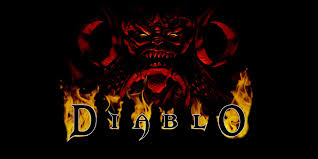

Diablo

דיאבלו היא סדרת משחקים של חברת בליזארד ,כרגע ישנם שלושה משחקים רשמיים ועוד ארבע הרחבות אם אני לא טועה כמובן ששחקתי בכולם, הגרפיקה השתפרה בצורה משמעותית בין המשחקים.
המשחק הראשון ששחקתי באינטרנט בעולם פתוח היה דיאבלו 2, הייתי מתחבר לשרת ומשחק עם אינספור אנשים מכל העולם. אפשר לבחון את הדמות שבנית מול דמויות של אנשים אחרים בקרבות, או אפילו ללכת לטייל ביחד בעולם ולהשלים משימות אבודות. באחד מן המשחקים ששקחתי, ממש במקרה היה איתי ישראלי בשרת וברגע שגילינו שאנחנו מאותה מדינה ישר התחברנו.
שמרנו על קשר והיינו משחקים שעות ברצף ביחד , בלי לעולם לראות אחד את השני. עד היום אני זוכר את הבחור, שמו היה אוראלי והיינו מתכתבים בתוכנת המסנג'ר שהייתה פעם של ווינדוס. בזכותו גם הכרתי משחקים נוספים והתרחבו לי האופקים למה שאפשר לעשות ברשת, הגעתי לפורום מפורסם של משחקים שהייתי צעיר. בסופו של דבר הגעתי לנהל את כולו, עם 100 אלף מנויים. הפורום מנה תתי פורומים אשר מכילים את כל שמות המשחקים שהיה אפשר לשחק בהם ברשת עם צוות תמיכה מדהים שעזר לכולם בחינם, רק כדי לתרום לקהילה. בפורום רצו שאלות בנוגע לאיך להשיג דברים, לעבור משימות וכל מה שיכול לעלות ברוחכם.